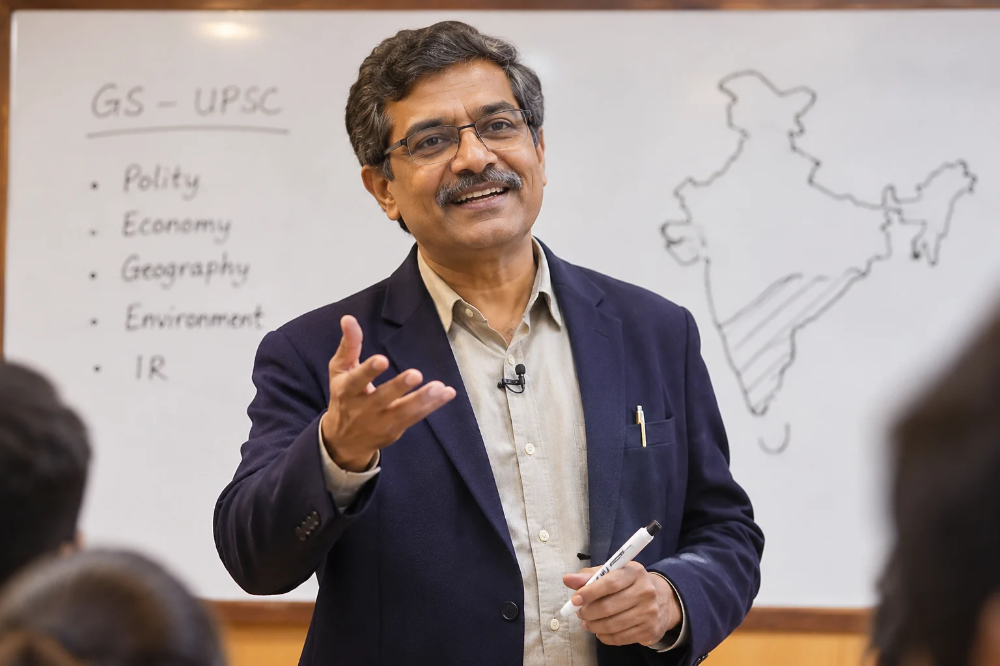
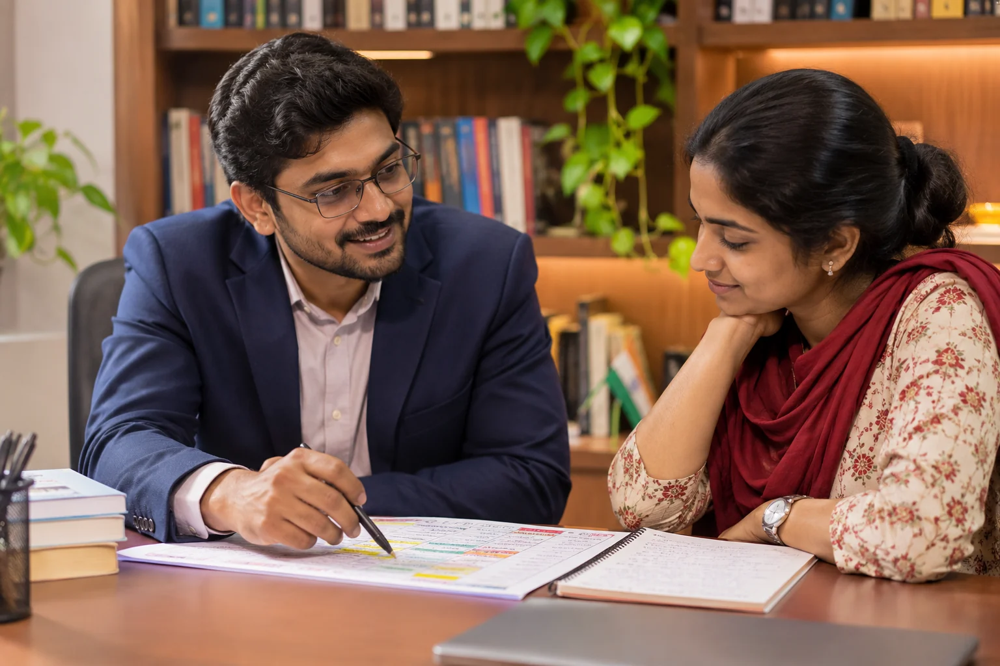
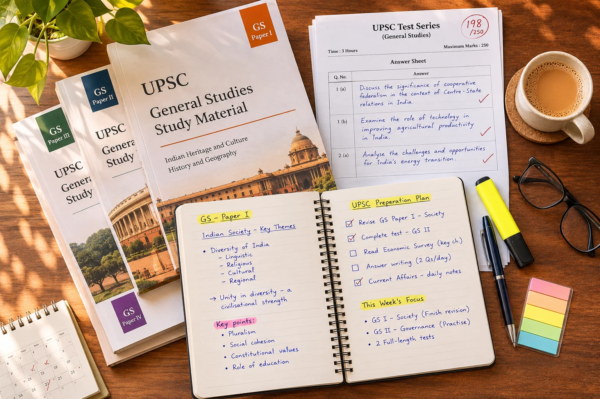
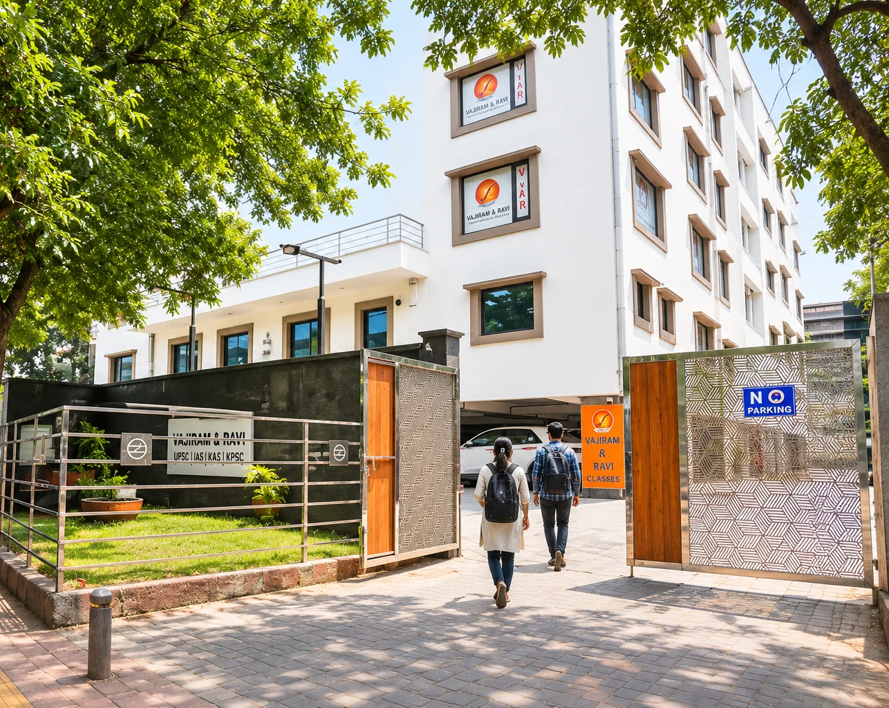
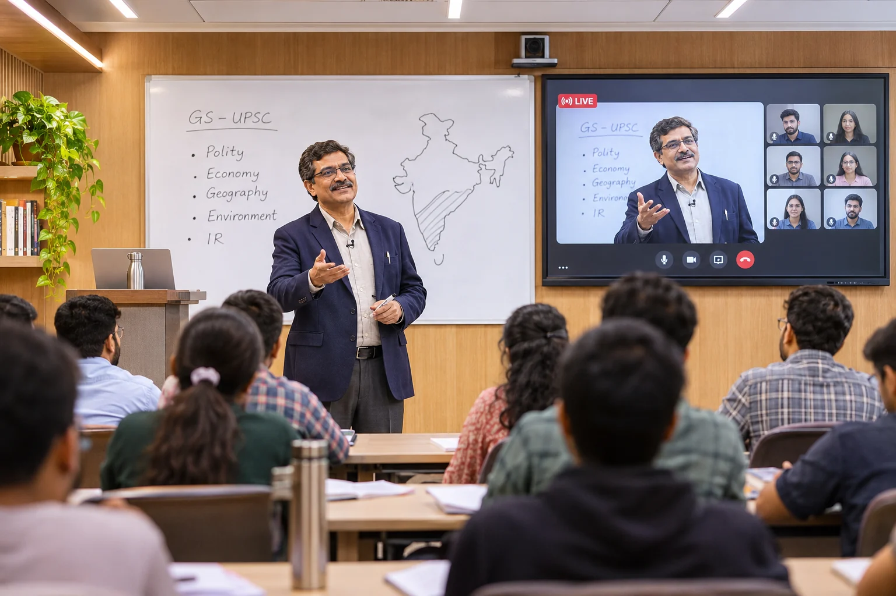
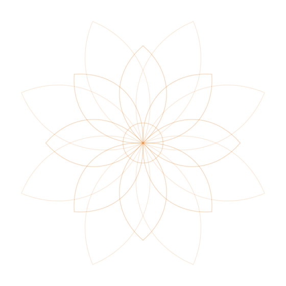

AIR 1 · every result since 2016
A proven track record
AIR 1 in every UPSC result since 2016, and all ten of the top ten ranks in CSE 2025 prepared with us. Founded in 1976 by Prof. P. Velayutham.
Meet the toppers50 Years Legacy
Five decades of guiding civil services aspirants through expert faculty, structured classroom programmes and comprehensive preparation for Prelims, Mains and the Personality Test.
Prelims & Mains
From Indian Polity and History to Economy, Geography and Environment, build your General Studies knowledge through daily classes, comprehensive printed material and regular tests.
UPSC Interview
The final stage is about more than what you know. Build confidence, articulate your thoughts and prepare for the board with mock interviews, DAF analysis and personalised guidance.
The Result
Every year, aspirants turn years of preparation into a place on the Civil Services merit list. With ranks 1 to 10 in CSE 2025 prepared with us, your story could be the next one we celebrate.
Choose the stage you're preparing for, then the programme. Every programme runs in the classroom and LIVE-Online.
AIR 1 · every result since 2016
AIR 1 in every UPSC result since 2016, and all ten of the top ten ranks in CSE 2025 prepared with us. Founded in 1976 by Prof. P. Velayutham.
Meet the toppers
The teaching
Expert faculty for every GS paper, the optionals and the essay: an academic tradition shaped by educators and subject specialists.
Meet our educators
Your plan
A plan shaped around your strengths and gaps, with a mentor who keeps it on track from Foundation to Interview.
Let’s talk
Study material
Notes, test series and interview preparation in one place. 59 questions in Prelims 2025 came from our test series.
Explore study materials
Old Rajinder Nagar
Over 50 years in Old Rajinder Nagar, New Delhi, at Gate 5 of Karol Bagh Metro.
Visit the campus
Classroom + LIVE-Online
12 UPSC CSE programmes in the classroom and LIVE-Online, with the same teachers and the same tests.
Find your programmeRegister online, or call 080-6220-6330 for registration or seat allotment, Monday to Saturday, 9 am to 7 pm.
Our GS Prelims cum Mains Programme covers the full syllabus with daily classes, printed study material, Prelims and Mains tests and mentoring, in the classroom or LIVE-Online. Graduates take the 1-year programme; college students start with the 2-year Fledgling.
Vajiram & Ravi
Prelims cum Mains Programme
Specialists for every GS paper, the essay, the optionals and the interview.
Schedule a free call with a Vajiram & Ravi counsellor to answer your questions, with no pressure to enrol.
Daily current affairs, a monthly magazine and the official papers, free, from the Vajiram & Ravi editorial desk.

Prelims, Mains and Quest articles, written the way UPSC asks.
Read today’s articles
UPSC current affairs monthly material, free to download.
Download this month
Prelims and Mains papers, with the UPSC answer key.
Browse papers
What is asked at each stage, and how it is marked.
Read the guide
Printed General Studies material for UPSC preparation.
Buy now
Every stage date, plus the age limit and eligibility rules.
Pick the channel that suits you, or visit us in New Delhi.
Still unsure? A counsellor can help, with no pressure to enrol.

36/50 CSE 2025 rankers from V&R
Find the programme that fits your stage, or talk to a counsellor who will help you choose. No pressure to enrol.
Find your course Talk to a counsellor
Talk to a counsellor
Prefer to call? 080-6220-6330 · Mon – Sat, 9 AM – 7 PM
How Vajiram & Ravi works
Pick your stage, join the batch that suits you, and study with daily classes, tests and mentoring, taught by specialists, from the same address aspirants have trusted since 1976.
Find your courseStep 1
From Foundation to the Interview
There is a programme for where you are now. Start from the beginning, or join at the stage you have reached.
See programmesStep 2
Classroom or LIVE-Online
Start on the right day with the right batch, at the Old Rajinder Nagar campus or live from wherever you are.
Upcoming batchesStep 3
Everything in one method
Daily classes, printed study material, Prelims and Mains tests and mentoring, so you always know what to study next.
See how it works